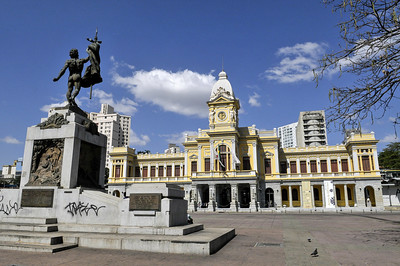
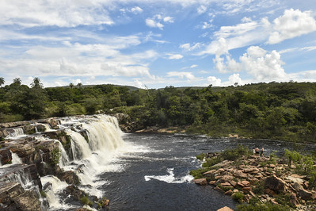
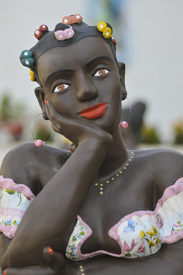

Dados Gerais
Minas Gerais é um estado do sudeste com 586.513,983 km² de área territorial e 853 municípios, sendo o estado com o maior número de municípios,e o segundo mais populoso do Brasil, com uma população de aproximadamente 21.411.923 pessoas. Minas Gerais faz fronteira com os estados: Bahia, São Paulo, Espírito Santo, Rio de Janeiro, Mato Grosso do Sul e Goiás. O estado tem o terceiro maior PIB do país. Minas Gerais tem sua economia combinada com a extração de minérios, em especial o ferro, o agronegócio e com o turismo.Minas no geral
Para além da importância econômica, Minas Gerais é marcante pela sua cultura, que passa pelas artes e pela culinária, pela sua história, que se faz essencial para a formação do Brasil, pela sua natureza, já que Minas possui três biomas em seu território(cerrado, mata atlântica e caatinga) e acima de tudo, Minas Gerais é um estado lembrado pelo seu povo. Os mineiros são cativantes e criativos, quer uma prova?O mineirês.Esse dialeto é responsável por unir os mineiros da cidade e do interior. O mineirês é tão importante que tem até um dicionário próprio.
Isso sem esquecer dos grandes personagens históricos mineiros que conquistaram o Brasil e o mundo. Seja no campo artístico ou até na aviação. os mineiros são sempre destaque.


